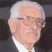

|
 |
Función / Cargo: Presidente
Nombre: José Pedro
Apellido: Damiani Martínez
Lugar de nac.: Montevideo
Fecha de nac.: 10/10/1921
Ocupación: Contador Público |

|
Datos Adicionales
- José Pedro Damiani Martínez, nacido el 10 de
octubre de 1921 en Montevideo (República Oriental del
Uruguay), cuatro hijas, un hijo y veinte nietos.
- Egresado de la Facultad de Ciencias Económicas y Administración
de Montevideo el 5 de julio de 1949.
- Condecorado por el Gobierno de la República de Panamá
con la Gran Cruz de Balboa en el grado de Gran Oficial.
- Ex Director del Bank of Investment and Trade Inc. de Panamá.
- Ex Director del Banco Río de La Plata de Panamá
- Ex Presidente de EISA Casa Bancaria desde su fundación
en Montevideo .
- Presidente de la Cámara de Comercio Uruguayo-Panameña,
desde su fundación (1975) hasta el presente.
- Ex Presidente del Banco del Este, Montevideo.
- Asistió como delegado a Simposios y Reuniones Sectoriales
sobre Banca Internacional, B.I.D y Banco Mundial en Asunción,
México, Bogotá, Washington, Panamá y Puerto
Rico.
- Sus trabajos sobre temas económicos han sido publicados
en revistas especializadas de Uruguay, Argentina, México,
Colombia y España.
- Ex Vicepresidente de la Exposición Permanente de la
Industria y el Comercio Uruguayo en Buenos Aires.
- Integra en la actualidad en calidad de Director, Síndico
y Apoderado; empresas incorporadas bajo las leyes de la República
Oriental del Uruguay, República Argentina, Antillas Holandesas
y República de Panamá.
- Presidente (desde 1964 a 1972) de la Cámara de Comercio
Argentino-Uruguaya en Buenos Aires y representante de la misma
en Montevideo.
- Ex miembro del Bureau Central de la Federación Internacional
de Básquetbol Amateur con asiento en Munich.
- Ex miembro del Bureau Central del Comité Internacional
de Mini-Básquetbol con asiento en Madrid.
- Miembro del Rotary Club de Montevideo desde el año
1953 y ex vicepresidente del mismo. Clasificación: Bancos
de Desarrollo.
- Fundador, ex presidente del Panathlon Club Montevideo, ex
gobernador del XI Distrito que incluye Uruguay, Argentina, Chile
y Perú. Ex miembro del Consejo Central con asiento en
Rapallo (Italia).
- Ex presidente, por seis años, de la Comisión
Administradora del Cilindro Municipal de Montevideo.
- Representante del Comité People to People de los Estados
Unidos de América del Sur, en el área deportes.
- Miembro del Instituto Cultural Uruguayo-Argentino.
- Integrante del Consejo Directivo del Jockey Club de Montevideo
por cuatro ejercicios.
- Presidente del Club Atlético Peñarol (directivo
desde 1969 y Presidente Honorario por resolución de la
Asamblea Representativa).
- Miembro del Club FIBA, con asiento en Munich.
- Asistió como delegado del deporte uruguayo en varias
disciplinas a los Congresos Olímpicos en Helsinky (1952),
Melbourne (1956), Roma (1960), Tokyo (1964), México (1968),
Munich (1972), Montreal (1976) y Los Ángeles (1984).
- Ex director de Bladex (Banco Latinoamericano de Exportaciones),
con asiento en Panamá y Grand Cayman (1985-1990).
- Ex miembro titular de la Convención Nacional del Partido
Colorado.
- Titular de la Comisión Fiscal del Centro Automovilista
del Uruguay.
- Vicepresidente del Banco de la República Oriental del
Uruguay (1985-1990).
- Director del Banco de la República Oriental del Uruguay
(1990-1995).
- Condecorado por el Rotary Internacional con la distinción
Paul Harris.
- Director de la Fundación Cultural Sino-Uruguaya.
- Condecorado por la Confederación Sudamericana de Fútbol
con la Orden del Mérito del Fútbol Sudamericano
en el grado de Gran Collar Extraordinario.
|
|
|
|